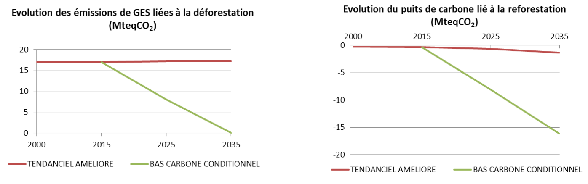
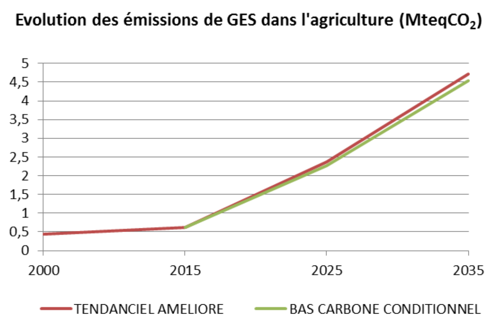

21 septembre 2015
La 21ème Conférence des Parties (COP21) à la Convention Cadre des Nations Unies sur les Changements Climatiques (CCNUCC) se tiendra à Paris, en décembre 2015. Un des principaux objectifs de cette conférence est de parvenir à l’adoption d’un accord juridiquement contraignant applicable à tous les Etats Parties, afin de limiter la hausse de la température planétaire en deçà de 2°C. Chaque Etat Partie est ainsi appelé à contribuer au développement du nouvel accord, en définissant les contributions qu’il pourra mettre en œuvre pour lutter contre les changements climatiques, et s’y adapter, sous la forme d’une Contribution Prévue Déterminée au niveau National (CPDN). C’est ainsi que le Congo s’est attelé à élaborer sa contribution nationale, afin de la transmettre avant le 1er octobre au secrétariat de la CCNUCC, en perspective de la COP21.
Il convient néanmoins de rappeler que le niveau d’émissions de gaz à effet de serre (GES) du pays reste à un niveau très raisonnable, inférieur à la moyenne mondiale. Cependant, la croissance forte du pays s’accompagne logiquement d’une augmentation importante de ces émissions. En parallèle, le phénomène global des changements climatiques impacte très sensiblement les conditions de la production agricole ainsi que l’équilibre des écosystèmes.
Grace à une politique de gestion durable de ses ressources forestières, le Congo a conservé une couverture forestière importante (65% du territoire national), constituant un puits de carbone et un réservoir de biodiversité inestimable pour l’ensemble de la planète. Cependant le pays ne se sent pas suffisamment soutenu par la communauté internationale dans ses efforts de préservation des forêts.
Pour un pays comme le Congo, il est totalement exclu de considérer les émissions sans prendre en compte l’ensemble du développement socio-économique du pays. Il s’agira effectivement de réduire les émissions de GES du pays sans compromettre ses capacités de développement. Ainsi, des politiques alternatives à faible émissions de carbone et peu gourmandes en ressources naturelles, entrant dans le cadre plus large de l’ « économie verte », sont promues dans cette CPDN.
La République du Congo se trouve actuellement dans une situation compliquée de type économie de rente avec des risques de fortes variations des ressources budgétaires basées sur la mono-ressource pétrolière. Pour s’industrialiser sans mettre en danger son environnement naturel, le Congo a besoin de diversifier son économie et d’accéder à des technologies alternatives et innovantes.
Par ailleurs, le secteur agricole demeure peu développé, nonobstant les différents appuis et initiatives gouvernementales dans le domaine, éloignant par conséquent les perspectives affichées d’une autosuffisance alimentaire. Le pays reste fortement tributaire des importations pour satisfaire ses besoins alimentaires sans cesse croissants. Cela constitue une source importante de dépense en devises. Ce secteur se développera grâce à un partenariat étroit entre des investisseurs transformateurs et des coopératives de producteurs, aidé par des Organisations Non- Gouvernementales (ONG). Cette intensification agricole, source de richesse et de devises pour le pays est de nature à fournir des emplois non seulement aux agriculteurs en milieu rural mais aussi à des jeunes du milieu urbain. Ces mesures permettront ainsi de lutter contre la pauvreté et la précarité alimentaire.
Ces mesures de développement doivent s’accompagner d’une organisation et d’une protection minimale du marché intérieur, notamment pour les produits de première nécessité, en privilégiant par exemple la production nationale par rapport aux biens importés.
Les ressources et potentialités considérables dont dispose le pays en matière agricole, forestière, hydroélectrique, touristique, sont autant d’atouts pour le développement d’une économie peu carbonée et génératrice d’emplois. Les moyens mis en œuvre détermineront le niveau de verdissement du développement, qui s’inscrira quoiqu’il en soit dans un objectif de développement économique national.
L’évaluation de ces moyens doit prendre en compte en premier lieu les actions indispensables au démarrage d’un développement global et soutenu du pays incluant une bonne gouvernance, une simplification des formalités administratives, un soutien aux études préalables, la promotion et le rayonnement du pays à l’international, la création d’infrastructures, ainsi que le soutien délibéré des pouvoirs publics et de l’opinion publique.
C’est pourquoi le travail qui suit simule les perspectives économiques, sociales et climatiques d’un développement diversifié répondant à un objectif de croissance de 10 % par an sur les modèles du Ghana, de la Côte d’Ivoire, du Kenya ou encore du Brésil.
Deux scénarios sont simulés en ce qui concerne les émissions de gaz à effet de serre : un scénario tendanciel non conditionné incluant les engagements que la République du Congo a déjà pris en matière de réduction de gaz à effet de serre, pour lequel une aide particulière n’est pas demandée et un scénario bas carbone conditionné par l’aide internationale.
Il convient de noter que sans aide supplémentaire ni soutien en matière de transfert de technologie, la République du Congo ne peut s’engager que sur les émissions du scénario tendanciel.
Le gouvernement de la République du Congo a ratifié la Convention Cadre des Nations Unies sur les Changements Climatiques (CCNUCC), le protocole de Kyoto et d’autres accords multilatéraux sur l’environnement. Il a dans ce contexte produit un Plan National d’Action pour l’Environnement (PNAE) qui a joué un rôle central dans l’identification de la vulnérabilité du pays face aux effets du changement climatique.
En outre, une Stratégie Nationale et un Plan d’Action pour les Changements Climatiques et la Variabilité (SNPA / CCV, 2004) ont été développés. Bien que le pays n’émette qu’environ 1,1 tCO2 par habitant et par an, il subit déjà les effets du changement climatique. La vulnérabilité est aggravée par de multiples contraintes biophysiques nuisant au développement, ainsi que par la faiblesse de ses capacités d’adaptation.
Cette contribution tient compte des stratégies et plans existants de la République du Congo, notamment le Plan National de Développement, le Document de Stratégie pour la Croissance, l’Emploi et la Réduction de la Pauvreté, la Stratégie Nationale et Plan d’Action de mise en œuvre de la Convention Cadre des Nations Unies sur les Changements Climatiques et la Stratégie Nationale de Développement Durable.
La présente soumission est la concrétisation de l’engagement du Président de la République de conduire son pays à l’émergence d’ici à 2025 à travers une politique de développement durable et d’appui à l’effort mondial de réduction des émissions des GES.
La République du Congo est un pays en développement avec une croissance démographique de 3 % par an. Sa croissance économique (hors secteur pétrolier) est estimée à 6% par an à partir de 2010 dans certaines prévisions. Comme indiqué dans la Stratégie « Congo Vision 2025 », une croissance de 10% par an sera retenue pour le présent document.
Bien que le Congo concentre ses efforts dans le secteur de l’énergie, ses objectifs de réduction de gaz à effet de serre (GES) seront réalisés grâce à des mesures prises dans tous les secteurs de l’économie, s’appuyant sur des stratégies et des plans d’action sectoriels touchant notamment les domaines de l’agriculture,de l’eau, des déchets, des forêts, de l’énergie, de l’industrie et de l’habitat. Les informations sont synthétisées dans le tableau ci-dessous.
| Type d’engagement conditionné par les moyens internationaux | Réduction par rapport à un scénario de développement tendanciel |
| Périmètre | Ensemble des émissions de GES hors stockage de carbone dans la biomasse forestière |
| GES | CO2, CH4, N2O (HFC, PFC, SF6 et NF3 seront couverts ultérieurement) |
| Année de référence | 2000 |
| Période | 2015-2025-2035 |
| Niveau de réductionconditionnée | Au moins 48 % de réduction des émissions par rapport au scénario de développement non maîtrisé (tendanciel) en 2025 et de 55 % en 2035 |
| Secteurs couverts | Énergie, dont les hydrocarbures Procédés industriels et traitement des déchets Mines et cimenteries Agriculture et élevage Utilisation des terres, leur changement et la forêt (hors puits naturel-restockage des forêts) |
| Développementtendanciel nonconditionnel | Projection des émissions de GES à l’horizon 2025 et 2035, partant de 2000, année de référence |
| Développementbas-carboneconditionnel | Projection des émissions de GES à l’horizon 2025 et 2035, partant de 2000, année de référence sur la base de deux scenarii : Le scenario tendanciel et le scenario bascarbone conditionnel |
| Potentiel deréchauffementGlobal (PRG) | Les valeurs de PRG utilisées sont celles utilisées par les experts du GIEC, selon la décision CP.8 de la CCNUCC pour la préparation des inventaires nationaux des d’émissions : PRG CO2 =1 (par convention), PRG CH4 = 21 et PRG N2O = 310 |
| Méthodologies pour l’estimation desémissions | Les approches méthodologiques sont basées sur l’usage des méthodes suivantes : - Les lignes directrices de l’IPCC 2006 - Les méthodes supplémentaires révisées et le guide de bonne pratique développés à partir du Protocole de Kyoto de l’IPCC 2013 |
Le présent document intègre les travaux de la seconde communication nationale à la Convention Cadre des Nations unies sur les Changements Climatiques, elle-même basée sur les inventaires des gaz à effet de serre de l’année 2000 ainsi que le suivi du système d’information énergétique du pays.
Sur la base de l’inventaire national des émissions de gaz à effet de serre (GES) de l’année 2000, les émissions de GES, hors forêts, s’élèvent à 2 000 kteqCO2. Ces émissions sont largement compensées par la capacité de séquestration des forêts congolaises, évaluée à 72 700 kteqCO2 [1] (puits naturel forestier, dont il ne sera plus tenu compte dans le reste du document). La politique d’atténuation des émissions de GES en République du Congo s’est fixée les deux axes suivants:
atténuer les émissions de GES dues aux secteurs de l’énergie et la lutte contre la déforestation non planifiée (REDD), et ce en maitrisant la consommation énergétique tout en ayant davantage recours aux énergies renouvelables ;
maintenir, voire renforcer le potentiel de séquestration du carbone par les forêts, et ce par une meilleure gestion du secteur, ainsi que par le reboisement.
Les engagements de réduction des émissions de GES pris par la République du Congo ciblent en priorité les émissions de GES hors stockage de carbone par la biomasse. La République du Congo comme les autres pays du bassin du Congo ne souhaite pas limiter sa politique Climat à la simple conservation de forêts à l’aide de mécanismes de financement internationaux. Cette option mettrait le pays sous la dépendance des mécanismes extérieurs et grèverait son développement économique et social, parce que manquant de lien avec l’économie réelle.
Deux scénarios d’émissions de GES ont donc été élaborés :
Un scénario tendanciel, qui correspond à un développement économique faiblement maîtrisé du point de vue des émissions. Il intègre néanmoins les décisions déjà prises par le pays (politiques publiques engagées après 2000 telles que le code forestier, le réseau des aires protégées, la directive nationale de réduction du torchage,…). L’engagement actuel du pays ne peut concerner que ce scénario, si les engagements financiers supplémentaires sollicités ici auprès de la communauté internationale ne sont pas obtenus.
Un scénario « bas carbone conditionnel », conditionné précisément par de nouveaux engagements de la communauté internationale chiffrés ci-après.
Ce document présente une synthèse de l’évaluation de ces scénarios, en termes d’émissions de gaz à effet de serre, mais également de coûts et de cobénéfices associés (développement économique, emplois, sécurité énergétique, adaptation aux changements climatiques, etc.).
La contribution de la République du Congo devrait permettre de réduire, dans un scénario bas-carbone conditionnel (dépendant de l’appui de la communauté internationale), les émissions de GES d’environ 48% en 2025 (soit 8MteqCO2), et 54% en 2035 (soit 19MteqCO2) par rapport au scénario tendanciel.
En 2025, les émissions pourraient être multipliées par 3 dans un scénario tendanciel, et n’augmenter que de 64% dans le cadre d’une économie bas-carbone.
En 2035, un scénario tendanciel amènerait à multiplier les émissions par 6, tandis qu’elles ne seraient multipliées que par 2,7 dans un scénario bas carbone.
| ANNEES | EMISSIONS (sans changement d’affectation des sols) | |||||
|---|---|---|---|---|---|---|
| 2000 | 2015 | 2025 TENDANCIEL | 2025 BAS CARBONE CONDITIONNEL | 2035 TENDANCIEL | 2035 BAS CARBONE CONDITIONNEL | |
| TOTAL en kteqCO2 |
2044 | 5317 | 16984 | 8793 | 34527 | 15858 |
| TOTAL en teqCO2/pers. |
0,72 | 1,10 | 2,55 | 1,32 | 3,75 | 1,72 |
Les émissions (hors changement d’affectation des sols), qui ne sont actuellement que de 1,1 tonne de CO2 par habitant, passerait à 2,55 t par habitant en 2025, et à 3,75 t de CO2 par habitant en 2035 dans le scenario tendanciel, ce qui est inférieur à la moyenne des émissions mondiales actuelles par habitant. Dans un scénario bas carbone ces émissions passeraient à 1,32 tonne par habitant en 2025, et à 1,72 en 2035, inférieur à 2 tonnes de CO2 par habitant, ce qui est l’objectif de convergence des émissions pour la planète.
La déforestation, dont l’une des premières causes est l’extension de l’agriculture, représente 81 % des émissions du pays. L’accroissement démographique va induire des besoins alimentaires croissants, occasionnant le développement de cultures vivrières et industrielles, dont une partie pourrait provoquer une amplification de la déforestation, qui reste faible jusqu’à présent (déforestation nette de 0,043% par an [BRLi, 2014]).
Par rapport à cette évolution, le scénario de développement tendanciel repose sur :
l’adoption d’une nouvelle loi forestière qui impose l’utilisation de techniques d’exploitation à impact réduit ainsi que la certification forestière. D’ici 2016, la quasi totalité des 11,7millions d’hectares de la superficie forestière affectée à la production disposeront d’un plan d’aménagement forestier.
des opérations de reboisement dans le cadre du PRONAR, qui ne sont que de 500 ha actuellement devraient pouvoir passer à 100 000 ha par an, comportant des plantations forestières et agro-forestières ainsi que des surfaces de restauration de forêts.
l’adoption d’un Plan National d’Affectation des Terres (PNAT) permettant de garantir un domaine forestier permanent.
Il faut toutefois signaler, que grâce à un faible taux de déforestation, et à un fort potentiel de séquestration naturelle des forêts tropicales du pays, celle-ci est largement supérieure aux émissions, et pourra encore augmenter grâce aux plantations.
Dans une perspective bas-carbone conditionnelle, il est proposé de :

L’agriculture est très peu développée au Congo puisque seulement 2 % des terres sont utilisées par le secteur vivrier, avec des techniques très rudimentaires. L’agro-industrie se cantonne essentiellement à la production de sucre et de maïs sur 312 000 ha. Il en résulte que 80 % des produits alimentaires destinés aux milieux urbains sont importés.
Il est proposé de mettre en valeur 50% des savanes dans le cadre de partenariats privés-coopératives agricoles pour la production de denrées vivrières (manioc, arachide, patate douce, pomme de terre, banane, plantain, igname, riz, viandes, huile de palme, maïs,…) mais également des denrées d’exportation ou d’aliments pour le bétail (soja, pellets). La production de canne à sucre ou d’huile de palme pourrait également être étendue pour la production d’éthanol ou de diester destinée aux carburants agricoles et ruraux. Dans le cas du Congo, il n’y a pas de concurrence entre la production énergétique et alimentaire, du fait des espaces disponibles.
Les techniques agricoles employées seraient résolument celles de l’agro foresterie et de l’agro écologie, valorisant les légumineuses, produisant du bois-énergie (pellets notamment) et de service, tout en palliant les effets néfastes des changements climatiques, constituant ainsi un important co- bénéfice entre l’atténuation et l’adaptation. Des projets de cacaoculture permettant de réduire les émissions dues à la déforestation sont des exemples à répliquer. Le cheptel animal serait quadruplé, dans le cadre de technique sylvo-pastorales, ce qui sera un facteur d’émissions supplémentaire. Les nouvelles sociétés agroalimentaires s’associeraient avec des coopératives d’agriculteurs maîtrisant le foncier (exemple de la Zambie, [Keith Palmer, Patient Capital]). Ces associations induiraient le transfert des technologies et des intrants vers les agriculteurs, sans compter les actions sociales, dans un esprit de respect des sols et des richesses biologiques du milieu environnant (création de micro-réserves biologiques). Ces actions seraient menées en partenariat avec des O.N.G. de développement (type IPHD). Les emplois créés sont estimés à 700 000 (5 ha par agriculteur sur 66% des surfaces mises en valeur), soit la demande prévisible d’emploi rural en 2035. L’autosuffisance étant atteinte, les produits d’exportation pourraient atteindre 13 millions de tonnes, contribuant ainsi à réduire la pauvreté du secteur rural.
La pêche maritime et fluviale ainsi que l’aquaculture couvrent seulement 60 % de la consommation. Afin d’atteindre l’autosuffisance en 2035, il conviendrait de sextupler les prises et la production en 2035, avec une incidence proportionnelle sur la consommation de gasoil.
Par ailleurs, en s’inspirant de la Politique Agricole Commune de l’Union Européenne, une protection minimale du marché intérieur des produits de première nécessité serait organisée par l’instauration de taxes et de quotas à l’importation de ces produits.

Le potentiel d’exploitation minière du Congo est très important, en particulier dans le secteur du fer, de la potasse, de l’uranium, de l’or et des diamants, et encore inexploité. La plupart des projets se trouveraient en zone forestière.
Dans un scénario tendanciel, on estime que 70 % de l’énergie consommée en 2025 sera issue d’énergies renouvelables (hydroélectricité, dont la moitié produite localement, sans appel au réseau public) et 80 % en 2035 (hypothèse d’augmentation sur la base d’investissements privés), tout en adoptant les modes d’extraction les plus respectueux de l’environnement.
Les cimenteries utilisent l’hydro-électricité comme énergie de base, et le fuel pour les fours à clinker.
Il est proposé en scénario bas-carbone d’augmenter la part des énergies renouvelables à utiliser pour l’extraction des produits miniers à hauteur de 90 % en 2025 puis à 95 % en 2035 (utilisation de la biomasse issue de plantations en savane en complément de l’hydro-électricité).
La République du Congo mise sur une croissance de 10% par an dans les prochaines années[2], ce qui correspondrait à un investissement annuel d’environ 5 300 milliards de FCFA sur 2015-2025.
Le secteur privé participera aux investissements dans le pays dans les conditions suivantes :
Les investisseurs auraient l’obligation d’appliquer une éthique environnementale et sociale permettant d’une part de créer des investissements compatibles avec une économie verte et bas carbone, et d’autre part d’investir dans des actions sociales de proximité du type dispensaire, cantine, école… Les emplois générés seraient de plus de 400 000 pour le seul secteur industriel.

La consommation en énergie est dominée à plus de 80% par la demande en bois-énergie des ménages. Compte-tenu d’une augmentation de 3 % de la population et de l’attractivité des villes, la population devrait atteindre 8,5 millions d’habitants en 2035, et serait urbaine à 83 %, tandis que la population rurale devrait stagner.
Par ailleurs, les besoins alimentaires ont été estimés pour ces mêmes populations en vue d’atteindre l’autosuffisance alimentaire en 2025. Les niveaux de demande énergétique sont basés sur cette augmentation ainsi que l’atteinte en 2035 d’une consommation individuelle de 2500 kWh par an[3], contre seulement 150 kWh par personne actuellement.
En matière de consommation domestique, l’objectif est de permettre l’accès à électricité pour 75% des urbains en 2025 et 100 % en 2035 avec respectivement des taux de 50 % et de 75 % en milieu rural. Par ailleurs, l’extension des foyers améliorés à charbon de bois, de même que la réalisation de meules améliorées par les charbonniers devrait permettre de diminuer sensiblement la consommation d’énergie.
En termes de transport, de nombreux projets sont prévus, qu’il s’agisse de projets d’infrastructures, le développement de services de transport en commun (notamment à Brazzaville et Pointe-Noire), pour lutter contre la congestion ou des évolutions de la législation (par exemple l’interdiction de l’importation de véhicules de plus de 5 ans). Dans un scénario bas-carbone conditionnel, il est proposé de maîtriser la hausse des consommations d’énergie liées au transport à 70% du scénario tendanciel en 2025[4], avec une option « carburant renouvelable » (pour 21 à 43% des consommations).
Le nombre de demandeurs d’emplois devrait passer de 800 000 actuellement à 3,7 millions en 2035 soit un quadruplement. Les emplois directs créés par les perspectives de chaque secteur étudié devraient totaliser 1,5 millions, ce qui, avec les emplois induits, devrait permettre d’atteindre le plein- emploi en 2035.

Représentant 23% des émissions directes en 2000, les émissions liées au torchage du gaz associé à la production pétrolière ont fait l’objet de plusieurs mesures, cadrant avec la participation du Congo dès cette année à l’initiative « Zéro Torchage de Routine d’ici 2030». Le gaz non torché est en partie valorisé dans deux nouvelles centrales à gaz à Djéno (50MW) et à Côte Maltève (300MW). Cette politique, déjà entrée en vigueur, est prise en compte dans le scénario tendanciel. ²
Le Congo dispose d’un important potentiel hydroélectrique estimé à environ 14000 MW dont à peine 228 MW (1,6%) est exploité. La République du Congo souhaite augmenter la part de l’électricité dans son mix énergétique, avec une cible d’environ 4 000 GWh consommés à horizon 2025. Sur cette base, le Congo a développé un plan ambitieux de développement de l’hydroélectricité, avec comme objectif d’assurer à horizon 2025 une fourniture de l’électricité à 85% d’origine hydroélectrique, et à 15% par le gaz. Enfin, le Congo développe également un plan d’électrification solaire des villages isolés (Stratégie énergétique du Congo 2015-2025).

La vision de la République du Congo, en matière d’adaptation au changement climatique repose sur l’intégration de cette composante dans un schéma d’investissement cohérent basé sur la stratégie de développement du pays, plutôt que sur des aides ou subventions ponctuelles et isolées, sans lien avec ladite stratégie. C’est la traduction de la vision consignée dans le Programme National de Développement du Congo (PND 2012-2016) : « Accélérer la modernisation de la société et l’industrialisation du pays ». La perspective est de générer une prospérité accrue et partagée comme fondement de l’émergence du Congo dans l’économie mondiale.
Le changement climatique constitue une menace pour la société, l’économie et l’environnement congolais. Les phénomènes météorologiques extrêmes, l’élévation du niveau de la mer, la hausse de température globale moyenne et les régimes pluviométriques imprévisibles ont des effets considérables sur les moyens de subsistance de la population. En conséquence, L’évolution des conditions climatiques met en péril la réalisation des objectifs de développement à moyen et à long terme, avec des conséquences extrêmes pour les groupes sociaux les plus vulnérables.
D’autre part, il est possible de transformer les défis du changement climatique en opportunités, en développant des politiques intégrées qui traitent en même temps la vulnérabilité à court terme et la résilience à long terme. Pour la République du Congo, l’adaptation aux variations et au changement climatique constitue la pierre angulaire de tout développement ou politique durable.
La République du Congo met en œuvre une approche sectorielle, adaptée aux circonstances locales des entités territoriales : zone côtière ou du littoral, plateau des cataractes et vallée du Niari, plaines alluviales du bassin du fleuve Congo, zones urbaines. Cette approche concerne les secteurs les plus vulnérables : l’hydrologie et les ressources en eau, l’énergie, l’agriculture, la forêt et la santé.
Les objectifs finaux de la République du Congo en termes d’adaptation aux changements climatiques qui doivent également trouver un écho auprès de la communauté internationale, se traduisent concrètement par :
La protection des populations : à travers une approche préventive de la gestion des risques, notamment dans les zones les plus menacées, qui s’appuie sur un système d’observation et de recherche pour mieux appréhender les risques climatiques actuels et à venir.
La stratégie d’adaptation de la zone côtière concourt à cette fin : cette stratégie se décline au travers de mesures visant à une gestion intégrée de la zone côtière par la mise en place d’un cadre juridique approprié, l’acquisition d’outils de surveillance et enfin la formation et l’information. Les orientations préconisent la réalisation d’un schéma d’aménagement du milieu urbain côtier, la promotion des activités génératrices de revenus liés aux écosystèmes marins et côtiers. A cela, il faut ajouter un dispositif comprenant des projets de conservations des mangroves pour la protection du littoral, la protection des espèces, la mise en place d’installations spécifiques pour la réception et la gestion des déchets, le suivi de la nidification des tortues marines et la création d’un observatoire du littoral et de l’environnement marin. La ville de Pointe-Noire, particulièrement exposée, fait l’objet de mesures de protection sur le littoral par des barrières physiques et des travaux de réhabilitation des berges.
La protection du patrimoine naturel, de la biodiversité, des forêts et des ressources halieutiques, à travers une approche d’adaptation ancrée dans la protection des écosystèmes.
Le Gouvernement congolais a créé à ce jour 17 aires protégées couvrant une superficie de 4.350.418 hectares, soit 13,2% du territoire national. Elles seront complétées par l’aire protégée de Ogoué Leketi .
La protection des systèmes productifs sensibles au changement climatique, comme l’agriculture. La République du Congo s’engage à restaurer les écosystèmes et à renforcer leur résilience, à lutter contre la dégradation des sols et des forets, et à prévenir les inondations.
La protection des systèmes des infrastructures à fort risque. La ressource en eau étant l’un des facteurs limitant du développement de l’agriculture de la République du Congo, la stratégie sectorielle préconise sa gestion intégrée, la protection contre la pollution, la formation, la recherche scientifique et la sensibilisation autour de ces thématiques.
Ces objectifs de protection nécessaires à l’adaptation exigent :
une nécessaire évaluation des besoins technologiques au niveau des secteurs prioritaires définis dans le projet de TCN, avec, principalement, l’appui de l’Entité Nationale Désignée (END) au Centre et Réseau des Ressources Technologiques (CRTC) de la CCNUCC et des autres partenaires stratégiques du pays ;
la formation et l’accompagnement à l’appropriation des technologies climatiques dans les secteurs devant en bénéficier ;
un transfert de technologies adaptées ;
des mesures d’incitation pour l’agriculture en zone de savanes, telle que la facilité de mécanisation.
La République du Congo souhaite l’assistance de la communauté internationale dans le financement et l’assistance technique nécessaire à l’atteinte de ces objectifs, dans le cadre d’une stratégie intégrée adaptation-atténuation.
Les fonds nécessaires à la mise en œuvre du scénario bas carbone concernent principalement les infrastructures liées aux énergies renouvelables, les reboisements, l’amélioration des conditions de l’investissement pour une économie verte, et la formation à la bonne gouvernance. S’y ajoute ici le financement nécessaire de l’adaptation aux changements climatiques.
Les investissements et coûts représenteraient annuellement 3710 Milliards de CFA de 2014 à 2025, ou 5,14 Milliards d’€. L’autofinancement du pays pourrait atteindre 20%, soit 1,03 milliard d’€, (ou 656 milliards de FCFA). La communauté internationale serait sollicitée à hauteur de 5,14 milliards d’euros pour la période 2015-2025. Le tableau suivant synthétise le coût des mesures d’atténuation et d’adaptation, ainsi que le mode de financement envisagé.
| ACTION/INVESTISSEMENTS | Montants Totaux annuels (Millions,de FCFA) | Montants Totaux annuels,(Millions d’€) | Autofinancement annuel Congo (Millions d’€) | Finacement international annuel total (Millions d’€) | dont dons annuels (Millions d’€) | dont Bonification de prêts (Millions d’€) |
|---|---|---|---|---|---|---|
| Amélioration des meules | 28,5 | 0,04 | 0,009 | 0,035 | 0,03 | 0,0 |
| Cacaoculture à faibles émissions | 196 | 0,30 | 0,06 | 0,2 | 0,2 | 0,0 |
| Plantations en plein en savane | 35000 | 53,35 | 10,67 | 42,7 | 42,7 | 0,0 |
| Implantation agroforesterie | 30000 | 45,73 | 9,15 | 36,6 | 36,6 | 0,0 |
| Formation agriculteurs | 87,5 | 0,13 | 0,03 | 0,1 | 0,1 | 0,0 |
| Agro industrie / biocarburant | 2130 | 3,25 | 0,65 | 2,6 | 2,6 | |
| Ménages (Foyers et gaz, solaire, centrales à,bois) | 100 | 0,15 | 0,03 | 0,1 | 0,1 | 0,0 |
| 2498 | 3,81 | 0,76 | 3,0 | 3,0 | 0,0 | |
| 19600 | 29,88 | 5,98 | 23,9 | 23,9 | ||
| Tramway | 12000 | 18,29 | 3,66 | 14,6 | 14,6 | |
| Mines | 2720 | 4,15 | 0,83 | 3,3 | 3,3 | |
| Autres industries / Electrification | 126000 | 192,07 | 38,41 | 153,7 | 153,7 | |
| Etudes préalables | 106000 | 161,59 | 32,32 | 129,3 | 129,3 | |
| Adaptation | 30790 | 46,94 | 9,39 | 37,5 | 37,5 | 0,0 |
| Renforcement de capacité,des décideurs | 3400 | 5,18 | 1,04 | 4,1 | 4,1 | 0,0 |
| Comité des investissements et de la bonne gouvernance | 500 | 0,76 | 0,15 | 0,6 | 0,6 | 0,0 |
| Total | 371050 | 566 | 113 | 453 | 125 | 327 |
Pendant les 5 premières années, ces fonds seraient mis à disposition du pays, sous le contrôle du comité précité, sous forme « START », sans conditionnalités et autres procédures de sauvegarde, du fait que les investissements concernés sont précisément des investissements environnementaux et sociaux à la fois.
La Stratégie Nationale du Développement durable prévoit la mise en place d’un Fonds National de Développement Durable (en plus du Fonds Forestier), fonds dédié à la promotion de l’économie verte dans toutes ses composantes, économiques et sociale en particulier. La création de ce fonds est à l’étude et se positionnera dans la lignée des Fonds Nationaux Climat qui se développent dans divers pays, en tenant compte des particularités de la stratégie congolaise.
Un comité pour les investissements et la bonne gouvernance (CIG) sera mis en place avec pour tâches principales :
d’assister la République du Congo pour la réussite de sa politique de développement à croissance rapide (avec objectifs, cibles et indicateurs) ;
de conduire des études préalables à l’implantation du secteur privé ;
de vérifier la bonne fin des crédits d’aide et des prêts internationaux ;
d’assister à la Cour des Comptes et la remise régulière de rapports à un conseil de représentants du
secteur privé et de la société civile sur la bonne gouvernance ;
de lutter contre les lenteurs administratives en particulier pour les dossiers des investisseurs ;
de former les élites à la bonne gouvernance et l’assistance à la lutte contre la corruption, notamment celle possiblement due aux investisseurs ;
de servir de médiation en deuxième recours pour la fixation des prix entre les investisseurs privés et les coopératives de producteurs ;
de proposer la fixation de quotas et de taxes pour les produits agricoles de première nécessité (en particulier les produits importés).
Ce comité serait dirigé par un représentant de la communauté internationale.
Ce comité ne serait en aucun cas un gouvernement bis mais resterait dans l’esprit d’une assistance, avec une déontologie stricte autant en matière financière qu’en matière de communication de documents et de discrétion dans les domaines à définir.
Seconde communication nationale 2009 ↩
Le Congo a un PIB de 14,4 milliards de $US en 2014 et un PIB par habitant de 3135 $US en 2013. Du fait d’une augmentation de la population de 3 % par an le taux de croissance qu’il s’est choisi de 10% par an. Sur le modèle des brasseries du Congo, il est proposé qu’un développement industriel intervienne à partir des investissements massifs à mettre en place, en moyenne de 5 300 milliards de CFA par an à partir de 2025 . ↩
ratio de consommation actuelle du Brésil ↩
PND ↩